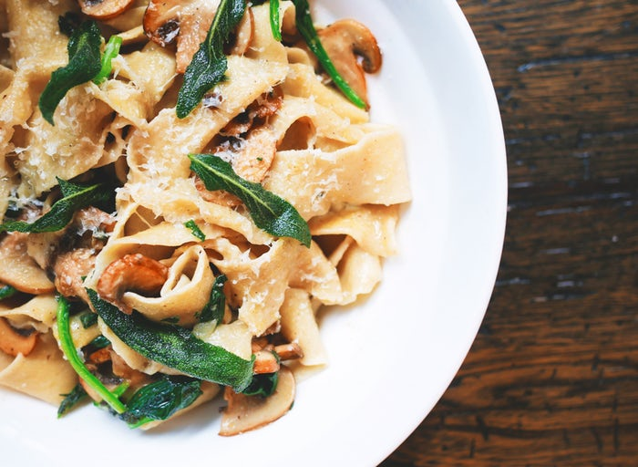

Mit was möchten wir euch begeistern?
Schüles Kocherei bietet ein kulinarisches Sorglos-Parket für Ihren nächsten Anlass. Einfach Anfragen und nach persönlicher Absprache gehe ich gerne auf Individuelle Wünsche ein. Ob Gartenparty, Familien- und Feiertagsessen, Firmenapero oder Candle Light Dinner – Ich verzaubere Sie und ihre Gäste mit köstlichen Gaumenfreuden